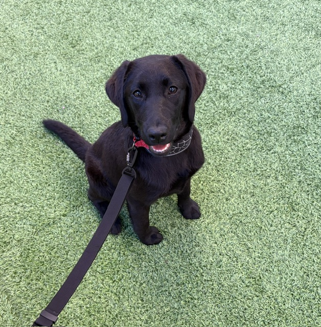

The art of arriving slowly
Why the best first day has no itinerary.
Practical notes, quiet observations, and a little fuel for your next escape.
Why the best first day has no itinerary.

The dishes and stories we found in a little market.

A gentle route for your next reset.